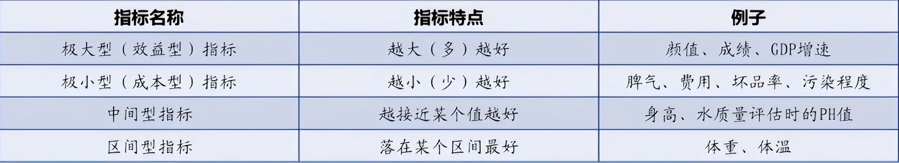
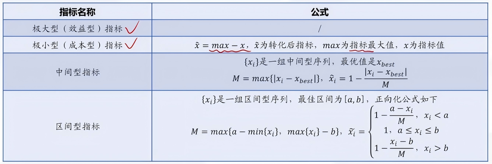

Topsis
优劣解距离法
模型引出
基本概念
优劣解距离法:常用的综合评价方法,其结果能精确反映各评价方案之间的差距
理想解
设想的最优的解,它的各个属性值都达到各备选方案中的最好的值
负理想解
设想的最劣的解,它的各个属性值都达到各备选方案中的最坏的值
方案排序
规则是把各备选方案与理想解和负理想解做比较,若其中有一个方案最接近理想解,而同时有远离负理想解,则该方案是备选方案中最好的方案
Topsis通过最接近理想解且最远离负理想解来确定最优选择
模型原理
Topsis法是一种理想目标相似性的顺序选优技术,在多目标决策分析中是一种非常有效的方法。
它通过归一化(去量钢化)的数据规范化矩阵,找出多个目标中最优目标和最劣目标(分别用理想解和反理想解表示),分别计算各评价目标与理想解和反理想解的距离,获得各目标与理想解的贴近度,按理想解贴进度大小排序,以此作为评价目标优劣的依据,贴近度取值在0~1之间,该值愈接近1,表示相应的评价目标月接近最优水平.
基本步骤
- 将原始矩阵正向化
将所有指标类型统一转化为极大型指标

 - 正向矩阵标准化
目的是去除量纲影响,保证不同评价指标在同一数量级,且数据大小排序不变- 假设有$n$个要评价的对象,$m$个评价指标,构成的正向化矩阵
那么对其标准化的矩阵记为$Z$,$Z$ 中的每一个元素 (每一个元素/其所在列的元素的平方和的平方根) - 标准化后需要给不同的指标加上权重,层次分析法、熵权法、Delphi法、对数最小二乘法等
- 假设有$n$个要评价的对象,$m$个评价指标,构成的正向化矩阵
- 计算得分并归一化
$S_i=\frac{D^-_i}{D^+_i+D^-_i}$- $D^+_i$ 为评价对象与最大值的距离
- 定义最大值$Z^+=(Z^+_1,Z^+_2,……,Z^+_m)$(行向量,取每列最大值)
- $D^-_i$ 为评价对象与最小值的距离
- 定义最小值$Z^-=(Z^-_1,Z^-_2,……,Z^-_m)$(行向量,取每列最小值)
- $S_i$为未归一化的得分,显然$S_i$越大$Di^+$越小,越接近最大值
- $D^+_i$ 为评价对象与最大值的距离
本博客所有文章除特别声明外，均采用 CC BY-NC-SA 4.0 许可协议。转载请注明来源 PlutoC！